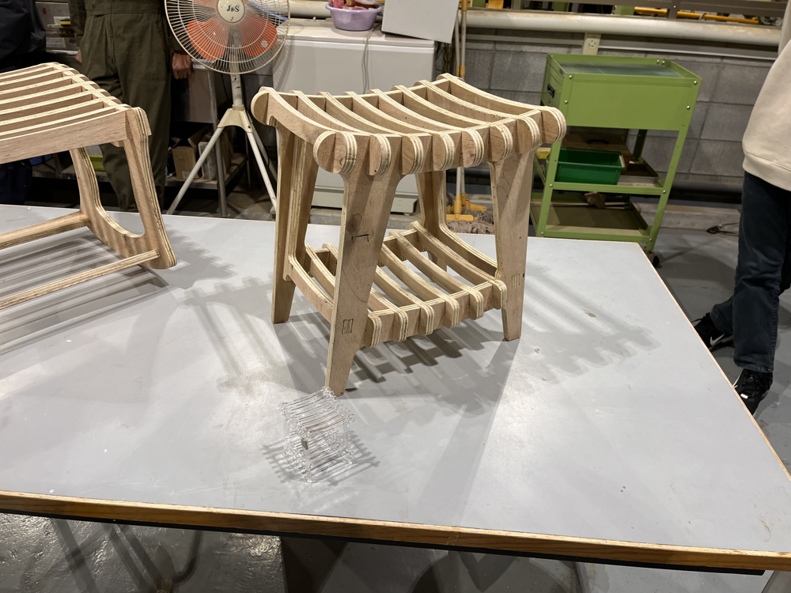
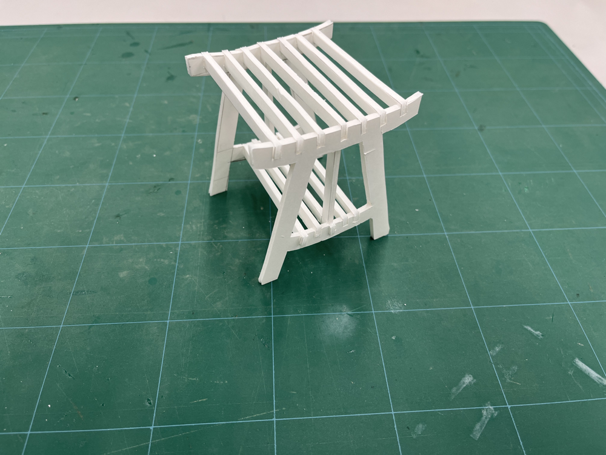
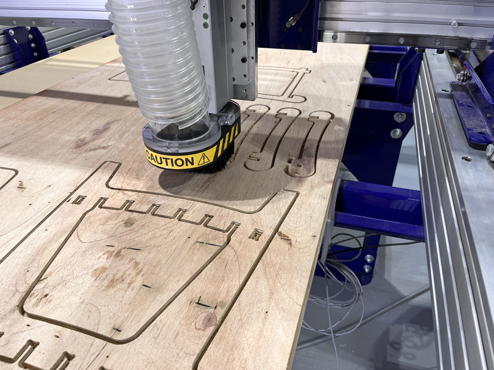
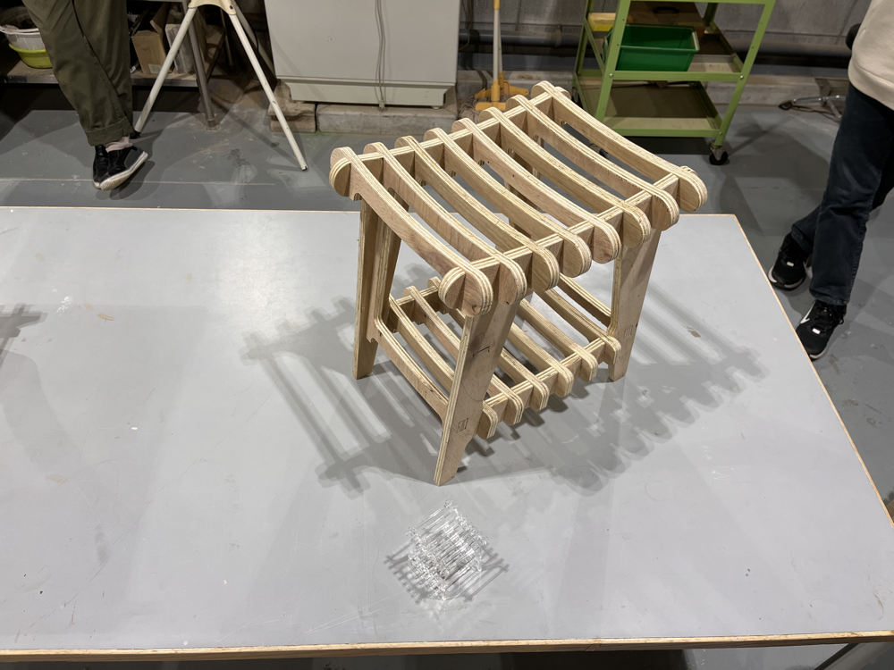
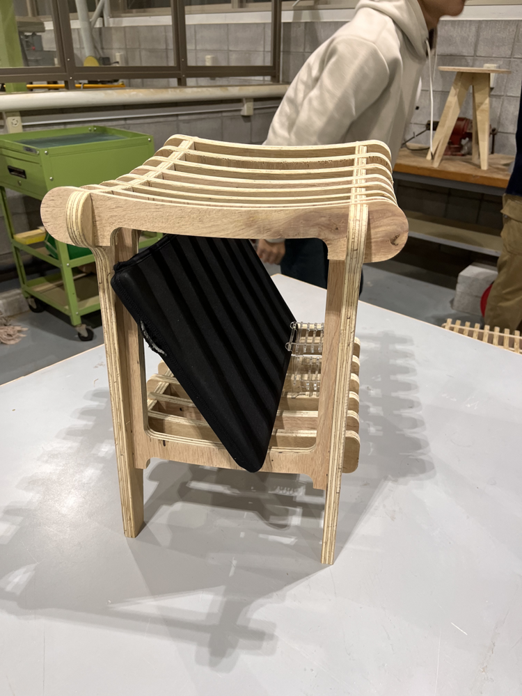

スツール制作

Technology
- CNC
- ワークショップ
- Processing
「明星大学デザイン学部主催の学内ワークショップで制作したスツール」
明星大学ないのデザイン学部、情報学部、建築学部、人文学部、の４つの学部が共同で一つのスツールを制作するワークショップ。異なる専門性を融合し、機能的かつ美しいスツールを創り出すことに挑戦した。
私たちのコンセプトは、荷物を置けてゆったりとくつろげる椅子をデザインすることだった。異なる視点を持つ意見は、使いやすさとデザインの両方を考慮することの重要性を改めて考えるきっかけとなった。
このワークショップを通じて、 機能と使いやすさのバランスの重要性を再認識した。デバイスやシステムの設計において、機能だけでなく、人が使う際の使いやすさや快適さもそのシステムの評価に深く関わることを考える機会となった。



